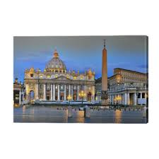

Iglesias situadas en el Vaticano

Ahora vamos a ver una lista de las iglesias mas emblematicas del vaticano.
Santa Maria Reina de la Familia.
Iglesia de San Esteban de los abisinios.
Iglesia de San Peregrino.
Iglesia de Sant'Anna dei Palafrenier.i
Iglesia de San Martín y Sebastián de los suizos.
Iglesia de San Esteban de Hungría.
Iglesia de Nuestra Señora de la Piedad en el Cementerio Alemán.